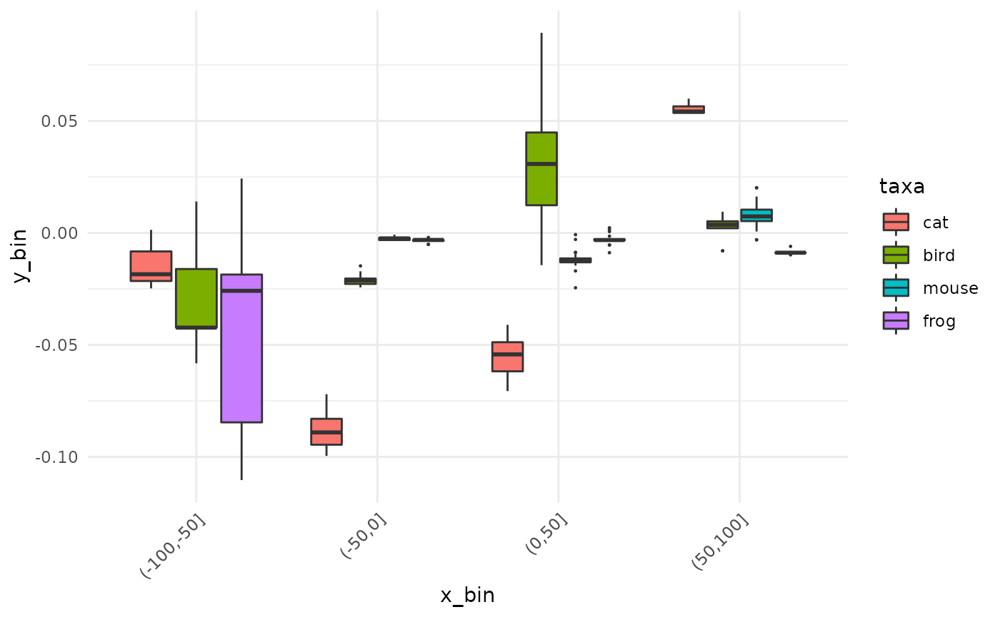
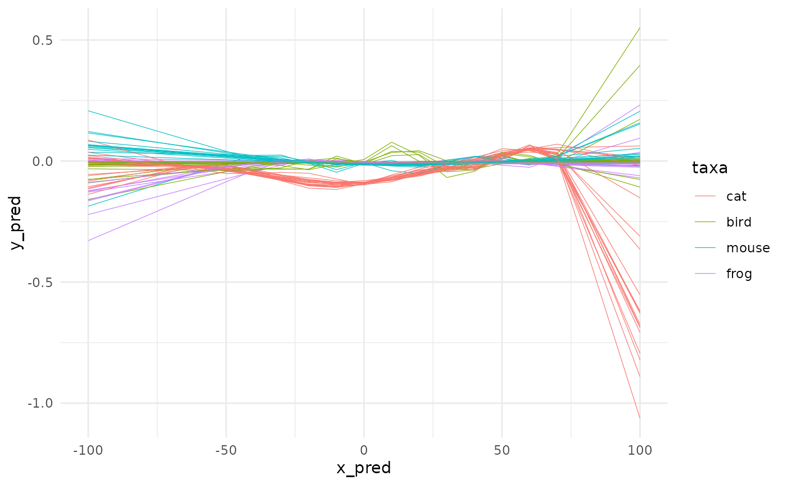
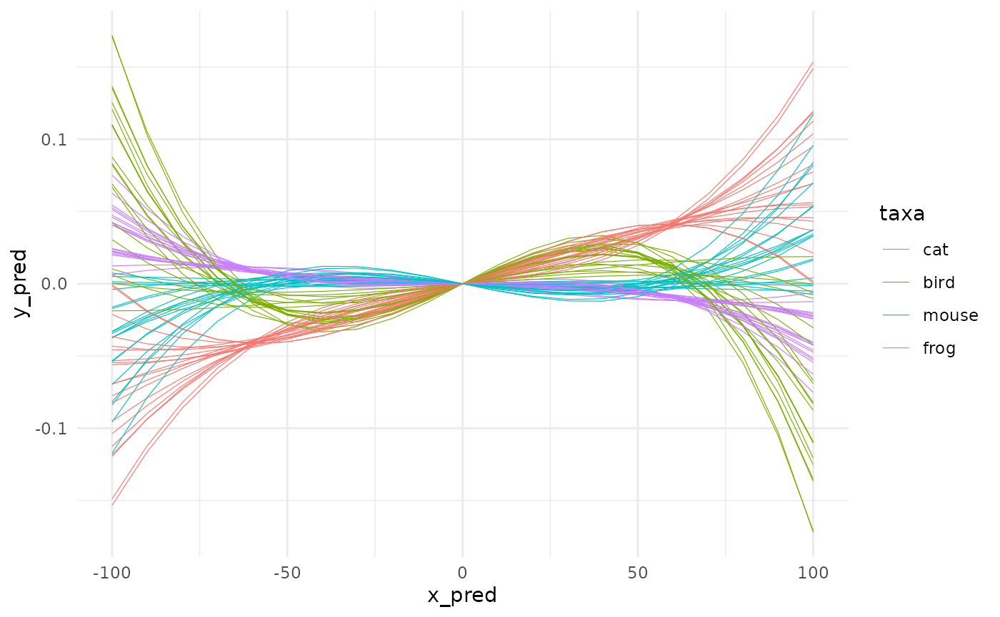
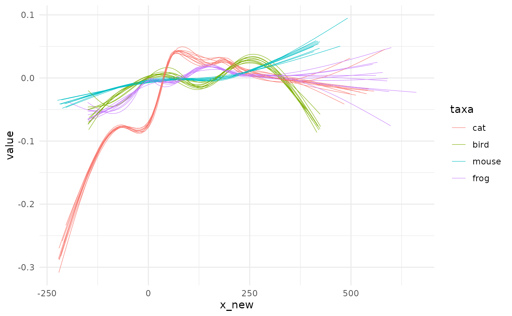

This vignette quickly presents the rationale of the package then jump to a case study. If you are reading it within R/RStudio, note that pataqu has a dedicated website that gathers the doc with examples, vignettes, news, etc.
Rationale
Sources of uncertainties
We chiefly had in mind archaeological data which dating of remains are often temporally bounded between two certain events, named terminus post/ante quem, further abbreviated tpq and taq1. The tpq is the earliest date, the taq the latest.
The real event may have happened anytime between these two boundaries with a flat, uniform, density of probability along the interval.
We can also think of radiocarbon dating, which comes with a prediction and a confidence interval (say \(\mu ± \sigma\)). But here the dating differ and the real event has a density of probability of gaussian nature with parameters \(\mu\) and \(\sigma\).
More generally, we will show how to deal with arbitrary uncertainties on x, whenever you have an idea on how it varies.
Consequences and how to inspect them
Whatever the source of the uncertainty on x, the graphics, tests and overall stories we can obtain from data may well be affected.
How robust is your lovely story regarding x uncertainties?
pataqu aims at visualizing and testing this using permutations. This is not the only way to do it but in our view it has the merit to only use information contained in the data itself.
The idea is:
- Simulate plausible new x values
- Display and/or test what you need
- Repeat many times and see what happens
Case study: taq and ptq
We will load the package and also use dplyr and ggplot2 from the tidyverse. More generally, if you library(tidyverse) you should not need much more and typically you will not need to dplyr:: or ggplot2:: like what you have in function examples. We treated well the examples so that they are meaningful.
animals dataset
This dataset is made of real (and still unpublished) data where researchers measured a value of interest on archaeological remains, in several sites (with us or stratigraphical units in them), dated with tpq and taq. The remains belonged to four taxa.
head(animals)
#> # A tibble: 6 × 6
#> taxa site us tpq taq value
#> <fct> <chr> <chr> <dbl> <dbl> <dbl>
#> 1 frog Alz-Br A-B_FO -125 -50 -0.0352
#> 2 frog Ans-lM A-M_12 50 700 -0.123
#> 3 frog Ans-lM A-M_12 50 700 -0.129
#> 4 frog Ans-lM A-M_139 150 200 0.120
#> 5 frog Ans-lM An-M_15 50 700 0.0575
#> 6 frog Ans-lM A-M_150 50 200 0.0528
# We only show the first lines but you can View(animals)How would we treat that? We could decide to display the full interval and see what happens:
# pure cosmetics for lighter graphs
theme_set(theme_minimal())
ggplot(animals) +
aes(xmin=tpq, xmax=taq, y=value, col=taxa) +
geom_errorbarh(size=0.2, alpha=0.5)
What a mess! We could try to add a mid point and add a smoother on top of them.
animals %>%
mutate(x_new=(tpq+taq)/2) %>%
ggplot() +
aes(x=x_new, y=value, col=taxa) +
geom_point(size=0.1) +
geom_smooth(method="loess", formula="y~x", se=FALSE) -> gg_mid
gg_mid We can now see some trends but we lost the uncertainty on x in the meantime. The graph before may have also been the one below, with the same likelihood.
We can now see some trends but we lost the uncertainty on x in the meantime. The graph before may have also been the one below, with the same likelihood.
We take animals and simply draw other x_new values, not on the midpoint but somewhere between the tpq and taq of each observation We use set.seed for the sake of replicability only.
set.seed(2329)
# lets draw new x values
animals2 <- animals %>%
dplyr::rowwise() %>%
dplyr::mutate(x_new=stats::runif(n=1, min=tpq, max=taq)) %>%
dplyr::ungroup()
# and redo gg_mid graph with this new tibble
gg_mid %+% animals2
Same same but different.
shake: generates a new dataset
The code used above is exactly what shake_uniform is made of behind the curtain. You can check by yourself and type pataqu::shake_uniform (no brackets) in the console. Have a look to the different shakers with ?shake.
animals
#> # A tibble: 5,533 × 6
#> taxa site us tpq taq value
#> <fct> <chr> <chr> <dbl> <dbl> <dbl>
#> 1 frog Alz-Br A-B_FO -125 -50 -0.0352
#> 2 frog Ans-lM A-M_12 50 700 -0.123
#> 3 frog Ans-lM A-M_12 50 700 -0.129
#> 4 frog Ans-lM A-M_139 150 200 0.120
#> 5 frog Ans-lM An-M_15 50 700 0.0575
#> 6 frog Ans-lM A-M_150 50 200 0.0528
#> 7 frog Ans-lM A-M_150 50 200 -0.00804
#> 8 frog Arl-Cp A-C_1061 -75 -40 -0.0760
#> 9 frog Arl-Cp A-C_4043 -40 -15 -0.00385
#> 10 frog Arl-Cp A-C_7039 -15 60 -0.0608
#> # … with 5,523 more rows
shake_uniform(animals, min=tpq, max=taq)
#> # A tibble: 5,533 × 7
#> taxa site us tpq taq value x_new
#> <fct> <chr> <chr> <dbl> <dbl> <dbl> <dbl>
#> 1 frog Alz-Br A-B_FO -125 -50 -0.0352 -72.0
#> 2 frog Ans-lM A-M_12 50 700 -0.123 561.
#> 3 frog Ans-lM A-M_12 50 700 -0.129 129.
#> 4 frog Ans-lM A-M_139 150 200 0.120 196.
#> 5 frog Ans-lM An-M_15 50 700 0.0575 592.
#> 6 frog Ans-lM A-M_150 50 200 0.0528 105.
#> 7 frog Ans-lM A-M_150 50 200 -0.00804 147.
#> 8 frog Arl-Cp A-C_1061 -75 -40 -0.0760 -72.4
#> 9 frog Arl-Cp A-C_4043 -40 -15 -0.00385 -35.0
#> 10 frog Arl-Cp A-C_7039 -15 60 -0.0608 58.3
#> # … with 5,523 more rowspataqu generalizes this idea with decoration around this pattern.
quake: generates many datasets
You can do several shakes at once with the function quake which is the real entry point of analyses with pataqu.
Here we will simulate only 5 new datasets for the sake of speed but you can generate thousands of them2 with randomized datations.
quake uses one of the shakers to generate entire datasets, possibly thousands of them. Here, we have tpq and taq dating so we will use shake_uniform and we have to specify the name of the columns3.
many_animals <- quake(animals, k=5, shaker=shake_uniform, min=tpq, max=taq)
#> * quake animals using shake_uniform
#> * launching 5 permutationsLet’s have a look to the results:
many_animals
#> # A tibble: 27,665 × 8
#> k taxa site us tpq taq value x_new
#> <int> <fct> <chr> <chr> <dbl> <dbl> <dbl> <dbl>
#> 1 1 frog Alz-Br A-B_FO -125 -50 -0.0352 -73.7
#> 2 1 frog Ans-lM A-M_12 50 700 -0.123 395.
#> 3 1 frog Ans-lM A-M_12 50 700 -0.129 249.
#> 4 1 frog Ans-lM A-M_139 150 200 0.120 192.
#> 5 1 frog Ans-lM An-M_15 50 700 0.0575 226.
#> 6 1 frog Ans-lM A-M_150 50 200 0.0528 129.
#> 7 1 frog Ans-lM A-M_150 50 200 -0.00804 127.
#> 8 1 frog Arl-Cp A-C_1061 -75 -40 -0.0760 -59.8
#> 9 1 frog Arl-Cp A-C_4043 -40 -15 -0.00385 -17.9
#> 10 1 frog Arl-Cp A-C_7039 -15 60 -0.0608 4.83
#> # … with 27,655 more rowsWe know have 27665 observations. Another way to look at them would be to take the first observations in each permutation and for each species:
many_animals %>%
group_by(taxa, k) %>%
slice_head(n=1)
#> # A tibble: 20 × 8
#> # Groups: taxa, k [20]
#> k taxa site us tpq taq value x_new
#> <int> <fct> <chr> <chr> <dbl> <dbl> <dbl> <dbl>
#> 1 1 cat Alz-Br A-B_1000 -125 -50 -0.167 -58.6
#> 2 2 cat Alz-Br A-B_1000 -125 -50 -0.167 -53.7
#> 3 3 cat Alz-Br A-B_1000 -125 -50 -0.167 -110.
#> 4 4 cat Alz-Br A-B_1000 -125 -50 -0.167 -80.9
#> 5 5 cat Alz-Br A-B_1000 -125 -50 -0.167 -109.
#> 6 1 bird Brm-CV B-CV_104 200 250 0.0207 208.
#> 7 2 bird Brm-CV B-CV_104 200 250 0.0207 226.
#> 8 3 bird Brm-CV B-CV_104 200 250 0.0207 220.
#> 9 4 bird Brm-CV B-CV_104 200 250 0.0207 226.
#> 10 5 bird Brm-CV B-CV_104 200 250 0.0207 236.
#> 11 1 mouse Arl-TV A-TV_11014 -40 -20 -0.00190 -23.8
#> 12 2 mouse Arl-TV A-TV_11014 -40 -20 -0.00190 -28.3
#> 13 3 mouse Arl-TV A-TV_11014 -40 -20 -0.00190 -36.8
#> 14 4 mouse Arl-TV A-TV_11014 -40 -20 -0.00190 -38.8
#> 15 5 mouse Arl-TV A-TV_11014 -40 -20 -0.00190 -32.6
#> 16 1 frog Alz-Br A-B_FO -125 -50 -0.0352 -73.7
#> 17 2 frog Alz-Br A-B_FO -125 -50 -0.0352 -90.7
#> 18 3 frog Alz-Br A-B_FO -125 -50 -0.0352 -65.2
#> 19 4 frog Alz-Br A-B_FO -125 -50 -0.0352 -117.
#> 20 5 frog Alz-Br A-B_FO -125 -50 -0.0352 -69.7Observe that the new column x_new varies for each permutation but is still strictly bounded by tpq and taq.
Sometimes you may not want as much randomness. Perhaps your new x_new should only be allowed to vary within stratigraphical units. That’s the job of shake_*_within which expects a by argument, so here again, we pass quake with it.
animals %>%
slice(1:10) %>% # we pick only 10 obs (only for speed here)
quake(2, shake_uniform_within, tpq, taq, within=us)
#> * quake . using shake_uniform_within
#> * launching 2 permutations
#> # A tibble: 20 × 8
#> k taxa site us tpq taq value x_new
#> <int> <fct> <chr> <chr> <dbl> <dbl> <dbl> <dbl>
#> 1 1 frog Alz-Br A-B_FO -125 -50 -0.0352 -94.6
#> 2 1 frog Ans-lM A-M_12 50 700 -0.123 261.
#> 3 1 frog Ans-lM A-M_12 50 700 -0.129 261.
#> 4 1 frog Ans-lM A-M_139 150 200 0.120 155.
#> 5 1 frog Ans-lM An-M_15 50 700 0.0575 330.
#> 6 1 frog Ans-lM A-M_150 50 200 0.0528 178.
#> 7 1 frog Ans-lM A-M_150 50 200 -0.00804 178.
#> 8 1 frog Arl-Cp A-C_1061 -75 -40 -0.0760 -59.7
#> 9 1 frog Arl-Cp A-C_4043 -40 -15 -0.00385 -28.0
#> 10 1 frog Arl-Cp A-C_7039 -15 60 -0.0608 54.9
#> 11 2 frog Alz-Br A-B_FO -125 -50 -0.0352 -64.7
#> 12 2 frog Ans-lM A-M_12 50 700 -0.123 295.
#> 13 2 frog Ans-lM A-M_12 50 700 -0.129 295.
#> 14 2 frog Ans-lM A-M_139 150 200 0.120 157.
#> 15 2 frog Ans-lM An-M_15 50 700 0.0575 679.
#> 16 2 frog Ans-lM A-M_150 50 200 0.0528 117.
#> 17 2 frog Ans-lM A-M_150 50 200 -0.00804 117.
#> 18 2 frog Arl-Cp A-C_1061 -75 -40 -0.0760 -43.3
#> 19 2 frog Arl-Cp A-C_4043 -40 -15 -0.00385 -21.8
#> 20 2 frog Arl-Cp A-C_7039 -15 60 -0.0608 43.8Note that lines c(1, 3) in one hand, and c(6, 7) in the other share for the first iteration (and all others), the same x_new because they come from the same us.
spaghetti0 visualizing trend after quake
Let’s say you are happy with the straightforward geom_smooth from ggplot2. spaghetti0 helps you to do this directly after quake.
spaghetti0(many_animals, y=value, by=taxa)
#> `geom_smooth()` using method = 'gam' and formula 'y ~ s(x, bs = "cs")'
The name of the function should be clear now but why the trailing ‘0’ to it? You’re right, there is a spaghetti full stop but it comes after an intermediate modelling step we will see now.
To bin or not to bin?
You have many new x values now but how about having them fixed on x values of interest? Here, we can think of slicing the temporal range into centuries, or 20 groups of same size and then get estimates, for each permutations of the value of interest.
Such discretization of a continous data may seen paradoxical when we are precisely randomizing x. It is neither mandatory (if you’re happy with spaghetti0) nor always desirable. Some of its merits and the motivation behind is detailed in ?fitting (and all ?fit_* function since they share the same page).
That being said, to do such discretizations you have two different approaches:
define bins, grab data in them and then summarize them, eg using
median,mean, etc.fit regression models on full range and then use them to predict y values using a common sequence of x values.
The first approach is the purpose of bin: the second is the purpose of fit_* functions.
bin: bins values and summarize
From now on, we will shift to animals_q which is a built it dataset of animals with 20 permutations and with dates ranging between 100 BC and 100 AD (ie -100 to 100). See ?animals_q.
bin discretizes x values using variations on cut yet we use the more convenient cut_number, cut_width and cut_interval that comes with ggplot2
Let’s bin y values (still names value) every 50 years and get the median per taxa: (todo implement this)
animals_binned <- bin(animals_q, y=value, by=taxa, fun=median)
animals_binned
#> # A tibble: 400 × 4
#> k taxa x_bin y_bin
#> <int> <fct> <fct> <dbl>
#> 1 1 cat [-75,-19.6] -0.0275
#> 2 1 cat (-19.6,-2.48] -0.0810
#> 3 1 cat (-2.48,16.9] -0.101
#> 4 1 cat (16.9,59.8] 0.0274
#> 5 1 cat (59.8,79.3] 0.0556
#> 6 1 bird [-75,-19.6] -0.0383
#> 7 1 bird (-19.6,-2.48] -0.0310
#> 8 1 bird (-2.48,16.9] 0.00634
#> 9 1 bird (16.9,59.8] 0.0372
#> 10 1 bird (59.8,79.3] -0.0181
#> # … with 390 more rowsNote that x_bin is now a factor. The natural graphical display is a good old boxplot:
ggplot(animals_binned) +
aes( x_bin, y_bin, fill=taxa) +
geom_boxplot(outlier.size = 0.2) +
theme(axis.text.x = element_text(angle=45, h=1))
We will see how to test that in the next section.
fit_*: fits a regression model and predict
You can also choose to define a regression model for each permutation and use it to predict fixed values. In other words, to gain more control over what spaghetti0 offered you before, almost for free.
Here come the fit_* family: (todo: handle x_pred, same refinement as above for bin)
animals_gam <- fit_gam(animals_q, y=value, by=taxa, x_pred=seq(-100, 100, 10))
#> * fitting with gam(value ~ s(x_new, bs = "cs"))
animals_gam
#> # A tibble: 1,680 × 4
#> k taxa y_pred x_pred
#> <int> <fct> <dbl> <dbl>
#> 1 1 frog -0.329 -100
#> 2 1 frog -0.280 -90
#> 3 1 frog -0.232 -80
#> 4 1 frog -0.183 -70
#> 5 1 frog -0.134 -60
#> 6 1 frog -0.0857 -50
#> 7 1 frog -0.0395 -40
#> 8 1 frog -0.00449 -30
#> 9 1 frog 0.00882 -20
#> 10 1 frog -0.0176 -10
#> # … with 1,670 more rowsHere finally comes spaghetti that displays such pre-digested data. In ggplot2 terms, spaghetti uses geom_line where spaghetti0 uses geom_smooth.
I know you want more graphs and less blabla (because you know you can find it in ?spaghetti anyway):
spaghetti(animals_gam, by=taxa)
In the same family, you also have fit_loess too and the good old fit_lm members. To all of them you can refine the formula to stick to what you want to model. We will try something like : \(value ~ x^3 + x\) with no intercept.
animals_origin <- animals_q %>%
fit_lm(y=value,
formula_rhs = I(x_new^3) + x_new - 1,
by=taxa,
x_pred=seq(-100, 100, 10),
.keep_mod = TRUE)
#> * fitting with lm(value ~ I(x_new^3) + x_new - 1)The argument formula_rhs stands for “right hand side” and use the classical formula mini-grammar.
First, let’s plot it:
spaghetti(animals_origin, by=taxa)
It’s likely pure nonsense here but we do it anyway. Do not try this at lab without statistical safety belts.
Perhaps, you have noticed the .keep_mod argument above and the additional columns in animals_origins4:
animals_origin
#> # A tibble: 1,680 × 6
#> k taxa mod y_pred x_pred adj_r2
#> <int> <fct> <list> <dbl> <dbl> <dbl>
#> 1 1 frog <lm> 0.0219 -100 0.000421
#> 2 1 frog <lm> 0.0173 -90 0.000421
#> 3 1 frog <lm> 0.0134 -80 0.000421
#> 4 1 frog <lm> 0.0103 -70 0.000421
#> 5 1 frog <lm> 0.00771 -60 0.000421
#> 6 1 frog <lm> 0.00565 -50 0.000421
#> 7 1 frog <lm> 0.00401 -40 0.000421
#> 8 1 frog <lm> 0.00271 -30 0.000421
#> 9 1 frog <lm> 0.00167 -20 0.000421
#> 10 1 frog <lm> 0.000791 -10 0.000421
#> # … with 1,670 more rowsWhen passing fit_* functions with .keep_mod=TRUE we do two things: keep the original models, add a single meaningful index on the quality of the model (see ?fitting, adj.r2 for gam and lm; rse for loess).
You need a little bit data handling but you can do nice things with them:
# first remove duplicates
lms <- animals_origin %>% group_by(k, taxa) %>% slice(1) %>% ungroup()
# very low r2 everywhere: pure nonsense confirmed
ggplot(lms) +
aes(taxa, adj_r2, col=taxa) +
geom_violin() + geom_jitter()
# you could also access all components of $mod columns, use broom on it, etc. etc.
test_*: test for differences
Whether you used the bin or fit pathway you have now slices of x (eg a factor) and y values5. We will call bacl animals_binned from above.
animals_binned
#> # A tibble: 400 × 4
#> k taxa x_bin y_bin
#> <int> <fct> <fct> <dbl>
#> 1 1 cat [-75,-19.6] -0.0275
#> 2 1 cat (-19.6,-2.48] -0.0810
#> 3 1 cat (-2.48,16.9] -0.101
#> 4 1 cat (16.9,59.8] 0.0274
#> 5 1 cat (59.8,79.3] 0.0556
#> 6 1 bird [-75,-19.6] -0.0383
#> 7 1 bird (-19.6,-2.48] -0.0310
#> 8 1 bird (-2.48,16.9] 0.00634
#> 9 1 bird (16.9,59.8] 0.0372
#> 10 1 bird (59.8,79.3] -0.0181
#> # … with 390 more rowsOne can now test globally when patterns between taxa differ:
test_globally(animals_binned, x=x_bin, y=y_bin, by=taxa)
#> * testing global differences within taxa along 5 slices using kruskal_p
#> # A tibble: 5 × 2
#> x_bin p
#> <fct> <dbl>
#> 1 [-75,-19.6] 3.77e-14
#> 2 (-19.6,-2.48] 6.97e-13
#> 3 (-2.48,16.9] 1.10e-12
#> 4 (16.9,59.8] 1.76e-10
#> 5 (59.8,79.3] 2.94e-13And test for pairwise differences:
test_pairwise(animals_binned, x=x_bin, y=y_bin, by=taxa)
#> * testing differences between pairs of taxa along 5 slices using wilcox_p
#> # A tibble: 30 × 3
#> x_bin pw p
#> <fct> <chr> <dbl>
#> 1 [-75,-19.6] cat ~ bird 0.0796
#> 2 [-75,-19.6] cat ~ mouse 0.0000000586
#> 3 [-75,-19.6] cat ~ frog 0.0000000592
#> 4 [-75,-19.6] bird ~ mouse 0.0000000670
#> 5 [-75,-19.6] bird ~ frog 0.000000123
#> 6 [-75,-19.6] mouse ~ frog 0.00000156
#> 7 (-19.6,-2.48] cat ~ bird 0.0000000674
#> 8 (-19.6,-2.48] cat ~ mouse 0.0000000670
#> 9 (-19.6,-2.48] cat ~ frog 0.0000000674
#> 10 (-19.6,-2.48] bird ~ mouse 0.0360
#> # … with 20 more rowsYou may have warningsrelated to ties. See ?wilcox.test
Finally
This vignette shows most of what pataqu can help you at, yet most of the time presenting and discussing a spaghetti0 plot would be, in our humble opinions, both enough and parcimonious.
With that it mind, only two functions would be needed to get your results:
quake(animals, k=10, shake_uniform, tpq, taq) %>%
spaghetti0(y=value, by=taxa)
#> * quake animals using shake_uniform
#> * launching 10 permutations
#> `geom_smooth()` using method = 'gam' and formula 'y ~ s(x, bs = "cs")'